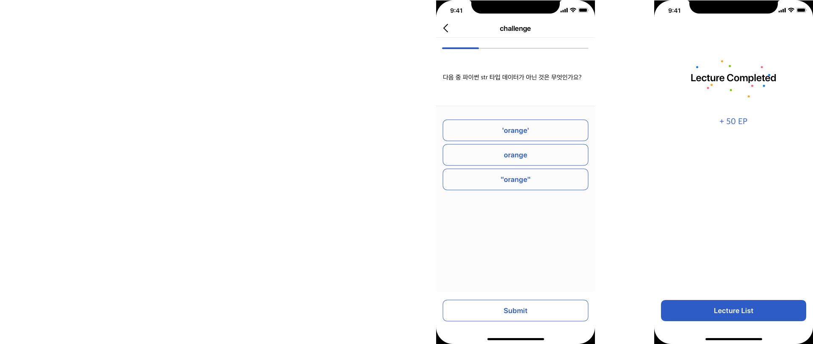

Epollo
2018 / UI
Epollo is a service that helps students with Computer Science, Emglish, and Math. Users can open their own courses or follow courses, ask questions, and answer questions and earn points. It uses OCR(Optical Character Recognition) technology to digitalise the texts, and ask people to participate by giving them tasks to whether the program read the text right or not and reward them.
The client sent me this storyboard, explaining the features they want to include in the service and overall course of actions.
Starting with the "Home" tab, it shows the most recently updated courses the user subscribed. Blue indicator under the thumbnail photo of each course shows the user's progress on the course. If the user tap the magnifier icon, the screen goes into the search mode, showing three devided section of Lecture, People, and Answers.
On mypage, the user can see the details about their accounts. It has three tab menus for subscribed, Starred, and accomplishments.
The course is made of several smaller modules. When the user tap the course card, it expands and shows the modules. Green check icon means the user finished that module. Every time they answer the quiz, the user gets immediate feedback whether the answer is right or wrong. When they finish the course, they goes back to the list by tapping the 'lecture list' button.
Board is the space for peole to ask questions and answer what they know, thus forming a learning community.
Tasks are there to make the service better. The users can help the OCR technology read the text more clearly, evaluate the contents, and make translations more smooth.
If the user have any question regarding the lecture, they can contact to the owner of the lecture. Update alters about the activities they are taking part are also seen here.